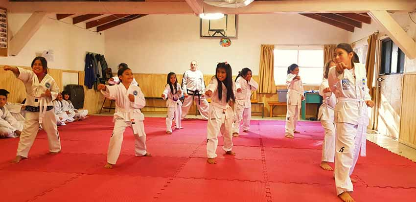
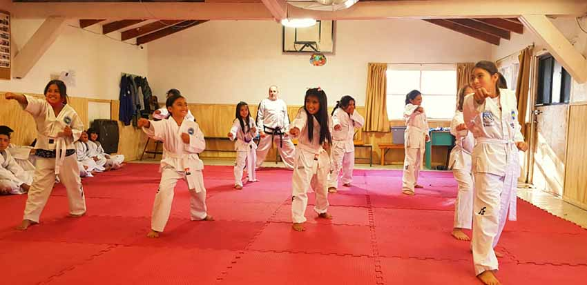
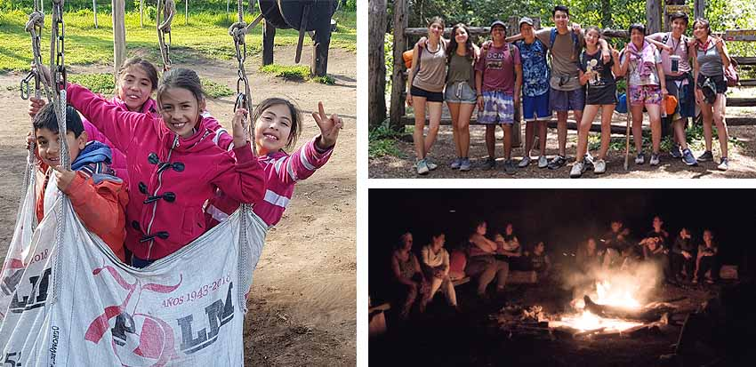
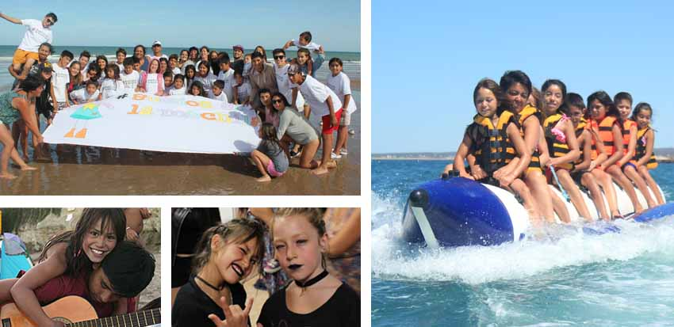
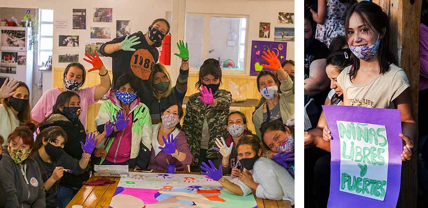

Nos enfocamos en ofrecer diferentes actividades para niños, niñas y adolescentes, brindándoles herramientas para que desarrollen y potencien sus habilidades e intereses. La idea principal es crecer juntos construyendo, entre todos, un lugar donde se sientan libres y seguros, enmarcado en la perspectiva de género que atraviesa la fundación de manera transversal.
El Taller es un espacio donde pueden ganar autoestima, descubrir qué les gusta y sentirse capaces de elegir el rumbo de su propia vida.
Nuestras propuestas son artísticas, educativas, deportivas y de recreación.
La creatividad es una de las habilidades claves para que nos desarrollemos y podamos construir lo inimaginable
En este taller, chicas y chicos de 6 a 18 años experimentan en el arte. A través de dinámicas divertidas se busca estimular la curiosidad.
La música expresa todo aquello que no puede decirse con palabras y no puede quedar en el silencio’. (Víctor Hugo)
No hubo nada más silencioso que el aislamiento por la pandemia. Pero ni la llamita popular ni los abrazos se consumen en el encierro: se transforman. Casi sin querer, en conjunto con los chicos y chicas, fuimos encontrando nuevas formas de abrazarnos. Ahora sabemos que los abrazos se hacen eternos cuando se vuelven canción.
Acá se enfrentan desafíos, miedos y frustraciones… hasta que llega el momento de dejarse llevar, transformando así el baile en una herramienta divertida y fuerte de expresión corporal.
Buscando estimular la curiosidad de los chicos organizamos cursos de primer nivel, en donde los participantes aprenden todo lo relacionado con los alimentos, las distintas preparaciones de platos y comidas de forma dinámica y divertida.
“La alfabetización es la puerta de entrada al aprendizaje y es esencial para fomentar la autoestima y la autonomía de las personas” Paulo Freire
El objetivo principal es que, sin importar en qué etapa del aprendizaje se encuentre la persona que transita el taller, pueda alcanzar alfabetizarse de acuerdo a su propio potencial.


“La educación es el arma más poderosa que puedes usar para cambiar el mundo” Nelson Mandela
Este proyecto se propone funcionar como espacio complementario y articulado con las instituciones educativas formales. Acompañamos la trayectoria y fomentamos la importancia de la escolarización, respetando los tiempos de aprendizaje de cada niño y niña.
Lo mejor que tienen los sueños es que pueden hacerse realidad. Durante el transcurso de los años 2018, 2019 y 2020 nos organizamos y trabajamos con los chicos, y sus familias, para lograr acceder al pase de esquí residente de temporada. ¡Y sí que valió la pena compartir, conocer, disfrutar y maravillarnos de la montaña en invierno entre amigos! Fue -y sigue siendo- una de las experiencias más enriquecedoras.
 

Esta práctica trabaja sobre el respeto, el autocontrol buscando que logren a través de los conocimientos adquiridos seguridad en sí mismos y libertad de expresión.
La iniciación de los chicos en la actividad les permite relacionarse mejor con el entorno natural que nos rodea en un marco de respeto, diversión y seguridad.

Nos enriquecemos en cada salida programada conociendo y haciendo más propio cada uno de los pedacitos de nuestra maravillosa ciudad.
Ya son varios los veranos que pasamos de campamento en campamento. Los días de calor se van volando entre fogones, guitarreadas, chapuzones y juegos. El sentido de pertenencia y cuidado de los más grandes con los más chicos se agranda a pasos agigantados después de cada uno de estos momentos compartidos.
Como acampar no alcanza, y soñar no nos cuesta, el atrevimiento de hacerlo en grande nos empujó a viajar juntos con dirección a Las Grutas. Si hay cosas que no tienen precio, convivir diez días con cuarenta y cinco locos que no les importa nada más que reír, es una de ellas. Cuando nos toca ir los chicos, juegan, se disfrazan y bailan sin vergüenza ni ataduras, siendo niños, como pocas veces pueden ser.
Además de desarrollarse encuentros específicos de la temática cada 15 días, el objetivo es que mujeres y niñas encuentren un espacio donde sentirse escuchadas, acompañarlas en el conocimiento y en el ejercicio de sus derechos, para poder ir transformando las desigualdades e injusticias de la vida cotidiana.
